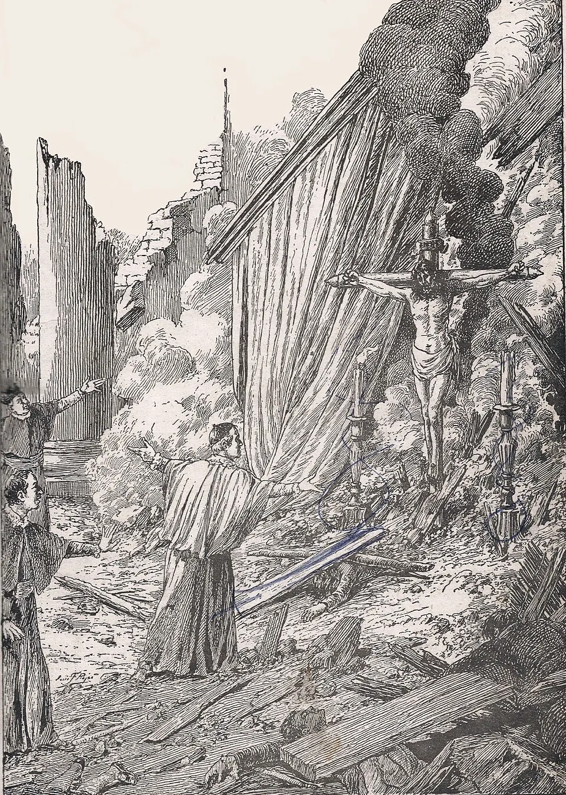

Terremoto de 1647

El terremoto del 13 de mayo de 1647 es uno de los desastres más recordados de la Colonia. Ocurrió de noche y destruyó gran parte de Santiago, entonces una ciudad pequeña de casas de adobe y templos de piedra y ladrillo. Murieron cientos de personas y los sobrevivientes quedaron a la intemperie, expuestos al frío y a las enfermedades. El obispo Gaspar de Villarroel dejó un testimonio escrito de la catástrofe.
La ciudad debió reconstruirse casi por completo, en un reino pobre y en guerra en la frontera del sur. La sociedad colonial interpretó el desastre en clave religiosa: muchos lo vieron como un castigo divino y se multiplicaron las rogativas y procesiones. La procesión del Cristo de Mayo, que sale cada 13 de mayo desde la iglesia de San Agustín, nació de esa experiencia y es una de las tradiciones religiosas más antiguas de la capital. Los sismos posteriores, como los de 1730 y 1751, muestran que los terremotos han sido una constante en la historia de Chile y han obligado una y otra vez a repensar la forma de construir.
Versión para niños
La noche del 13 de mayo de 1647, un fuerte terremoto sacudió Santiago. La mayoría de las casas y de las iglesias se cayeron, porque muchas estaban hechas de adobe. Muchas personas perdieron la vida y otras se quedaron sin hogar en pleno otoño. Los vecinos tuvieron que reconstruir la ciudad con mucho esfuerzo. Desde entonces, cada año se hace una procesión con una imagen de Cristo que, según la tradición, quedó en pie después del terremoto.
Para maestros
Nivel sugerido: 5° básico
Objetivo: Relacionar las características geográficas de Chile con los desastres naturales y analizar cómo la sociedad colonial interpretó y enfrentó el terremoto.
Preguntas para la clase:
- ¿Por qué los terremotos han sido tan frecuentes en la historia de Chile?
- ¿Cómo explicaban un terremoto las personas de la Colonia y cómo lo explicamos hoy?
- ¿Qué tradiciones actuales nacieron de hechos ocurridos hace siglos?
Actividad (20–30 min): El curso compara la forma de construir en la Colonia (adobe, teja, piedra) con la actual y elabora una lista de medidas de prevención ante sismos, relacionando el pasado con el plan de seguridad escolar.
Fuentes sugeridas: Memoria Chilena; Biblioteca Nacional Digital; Museo Histórico Nacional.
Objetivos de Aprendizaje (Currículum Nacional)
- 5° básico · HI05 OA 05 Describir algunas dimensiones de la vida colonial en Chile, como organización de la sociedad y grupos sociales … costumbres y vida cotidiana, arte y celebraciones
- 5° básico · HI05 OA 12 … riesgos naturales que afectan a su localidad, como sismos, maremotos, inundaciones, derrumbes y volcanismo, e identificar formas en que la comunidad puede protegerse
- 7° básico · HI07 OA 22 Reconocer y explicar formas en que la acción humana genera impactos en el medio y formas en las que el medio afecta a la población
Revisión humana pendiente. Cómo se revisa · Reportar un error
Cómo citar: Historia de Chile. (2026). Terremoto de 1647. En Historia de Chile: atlas y línea de tiempo. https://moises-salgado.github.io/historia-de-chile/momento/terremoto-de-1647.html